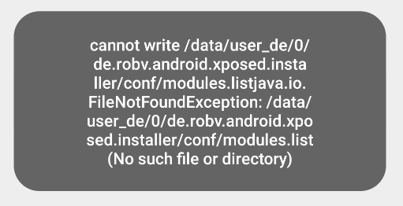
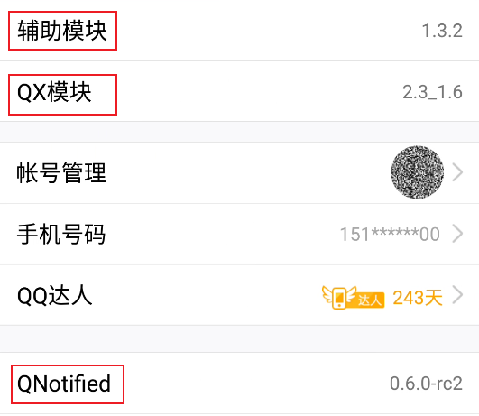
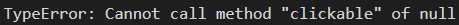

Qlivoid 与网课挂机
高中的中二作品 （开发流水帐），放到这边权当留档纪念，当时技术有限，代码实现难免有不优雅之处，还请各位看官一笑了之 ੭ ᐕ)੭*⁾⁾ 新一代自动化工具 Auto.py 也在加紧开发中，应该马上就能在我的 GitHub 仓库中看到啦
新冠疫情的降临，直接将高三的寒假从一周延长到了三个月，天天听网课确实是过于枯燥，不如研发个自动挂机脚本出来玩玩……脚本挂机下的网课，直接趴桌子睡觉不再是梦
这其实是个早就完成了的项目，开发记录全都丢在石墨文档，如今既然搭建了自己的博客，就索性把石墨那边的文档陆续往这搬，顺便搞一下排版优化
整理过程中，看到自己曾经的笔调写下的文档，想起了那段紧张又快乐的时光，果然还是会有些怀念啊……
写在前面
2020 年 3 月 9 日，周一
首先说一下关于 Qlivoid 名字的由来:

由于 Qlivoid 项目在我开始使用石墨文档之前就已经在做了，所以整个开发过程将以文档创建日期为分界做两种形式的记录。文档创建之前的内容记录主要以 QQ 空间的记录+回忆为依据编写，可能不能详细地还原出每个bug的出现时间和具体情况，文档创建之后的记录将用各种形式更加详细地记录出现的问题以及出现时间以及解决方案。
根据年级的安排来看，可能在 Qlivoid 尚未完善到最终版之前就已经正式开学，无法将一个项目完美的完成还是有些遗憾哈，不过姑且也是一次很有意义的练习和提升机会，就算明知道无法完成，也还是把它做好吧（其实最后还是做完了）
回忆部分
2 月 16 日 开端

智学网挂机脚本刚刚推出稳定版不到一周，就给我整这种幺蛾子，没办法，课依然不想听，挂机依然要挂，只能开始 QQ 挂机脚本项目（当时还不叫 Qlivoid）
2 月 20 日 雏形
脚本已经基本完成了，引用了 Jsp 模块，支持上课自动跳转，进入课堂发送消息打卡，复读机，检测问卷星链接并启动悬浮窗进行打卡，代码体量也已经达到了 472 行，能够满足一定程度的挂机需求，但依然不放心让它自己在那挂着，还有很多地方需要改进。
2 月 28 日 更新
在研究每日健康汇报 WPS 表单自动填写的时候，偶然发现能够通过对问卷星的打卡网页进行 JavaScript 注入来完成打卡，可以免去使用无障碍服务，同时有效避免了签到时悬浮窗遮挡聊天界面的问题，在一定程度上提升了脚本的稳定性，但同时也带来了新的问题，Auto.js Pro v7.0.4 中无法正常使用 JavaAdapter 实现类的实例化，所以临时赶工了一个 Socket 脚本来实现 Pro 版与免费版 Auto.js 之间的的通信，具体的流程是使用 Auto.js 免费版创建一个 Socket Server 等待挂机脚本发送的包含问卷星链接的连接请求（这个 Server 依然不稳定，即使使用 try...catch... 进行异常处理，依然有时候在重启 Qlivoid 时会因为不明原因自动停止，不过貌似在 Qlivoid 运行期间表现正常？注释于 3 月 9 日)
修复了下课后不能正常退出的问题（这个指的是模拟点击下课按钮失败，因判断下课逻辑错误而不能正常退出通话的问题在 3 月 7 日得到修复）
修复了有时候已经上课却找不到课程的问题（怎么修复的忘了）；修复了下课之后不能正常退出的问题（指点击「挂断」按钮失败的问题，判断是否下课的逻辑并无错误）通过重写 GetName 函数，修复了找不到聊天记录的问题。脚本体量扩展到 642 行，整体的稳定性有了较大提升。
2 月 29 日 更新
新增 检测聊天内容决定是否退出通话，逻辑为下课时间到后等待「谢谢老师」出现时退出通话，且最多等待 10 分钟。
将 Jsp 模块中的部分代码移植到脚本中，取消对 Jsp 模块的引用，使脚本整体集成到单文件（除了免费版那边的 Server，这个没办法搞貌似可以用Intent?）
项目正式更名为 Qlivoid，新增日志输出到文件，且日志内容包括输出该条日志代码的行号，方便后续调试。
3 月 3 日 更新
新增 检测到以 |; 或 #;（分号中英文无所谓），结尾的聊天记录时长震动并发出语音警报提醒
新增 英语课群签到打卡功能，同样为检测聊天记录决定行为，这里为了偷懒不想判断签到的 View，用了 QNotified 模块中的签到文本化功能将所有打卡消息转变为 [群签到]群签到（这样就能嵌入到聊天消息记录模块中🌶️）
修复有时候自动退出课堂失败的问题（具体问题不记得了，跟 2.28 修复的退课失败原因不同）
3 月 5 日 大更新
现在复读时会调用 TTS 语音引擎（小米系统内置一个小爱 TTS 引擎，挺好的）朗读复读内容，进群随机发送消息改为随机发送消息或进行群签到，消息内容简单化
1 | // 可选消息列表，#Sign# 表示群签到 |
Qlivoid 会自动通过群名称判断当前在上的课程，并自动修复所在群与应在群不同的情况（找不到所在群时跳转到应在群，所在群和应在群不同时将应在群设置为所在群）
新增对于群签到打卡是否成功的检测，若失败则再次尝试打卡，尝试次数上限定为 3
修复由于之前写代码的时候脑抽，忘了判断消息是否为自己发送，以及没有给群签到打卡设定冷却时间，导致的无限打卡的问题
修复了由于正则表达式少写一个 : 导致的日志显示行数错误的问题。
新增对聊天界面系统通知气泡的检测，在 QQ 抽风或因网络故障进不去直播时发出警告并自动重启 QQ
由于发现将日志输出到文件会拖慢脚本循环的速度，去除了这一功能。
3 月 7 日 更新


由于 3 月 6 日（你们怎么不发「谢谢老师」啊喂）和 3 月 7 日（奶奶滴，谁知道写作文还要退出语音的？？）语文课上翻车，现将下课后对“谢谢老师”的最长等待时间改为 5 分钟，且若下课前 5 min 内出现“谢谢老师”，则认为提前下课，脚本退出课堂
将语文课列为重点关注课堂，所有获取到的聊天记录将以语音形式播出，同时如果消息内容中出现预设的“重点关注”词汇，会进一步触发震动提醒
1 | // 重点关注词汇: ['退', '重新', '重进', '语音', '全体'] |
正式记录
需要注意的几点
网课情况复杂多变，需要考虑一些极端情况（比如在任何时刻通话都有可能被迫关闭，脚本应该有能够处理这些异常的能力），同时为了适应错综复杂的情况，脚本不能仅凭设备本地的设定做出行动，一定要能够从集体的行为中获取信息。
关闭权限后，会出现某些特殊 Dialog，需要在脚本中实现处理
悬浮窗权限未能获取


提示加入通话

提示添加快捷方式

提示通话冲突

提示悬浮窗打开失败

群公告
于是创建一个cancel函数，用于处理各种dialog事件：
1 | function cancel() { // 处理偶然弹出的dialog |
一些奇技淫巧
- 使 Auto.js 的日志输出内容包括打印日志的行：
1 | var methods = ['verbose', 'log', 'info', 'warn', 'error']; |
- 在主循环中拦截错误并显示行数：
1 | while (true) { // 主循环 |
- 脚本暂停函数（其实就是个死循环）
1 | function pause() { // 暂停 |
3 月 9 日
从今天起，语文课的直播换用群课堂进行，其实是件好事情（起码不聋了），对于群课堂的支持早在项目初期英语课使用群视频直播时便已完成，只需稍加优化即可投入使用，但再三考虑之后，还是决定将原来用于挂机的 Redmi 6A 更换为 LeEco Le X625，主要基于如下考虑：
-
换用的新设备有 Root 权限，启动 Activity 或者模拟点击、调用 shell 命令都更加方便(其实并不方便，注释于 3.10)
-
新设备安装有Xposed框架，某些功能能帮助节省代码量
-
新设备掉电快，拿着也要一直充电才能用，不如用来挂机
-
貌似新设备更流畅？
当然同时也带来了几个问题，其中之一便是换机之后大部分的代码都需要重构，因为两台机器的型号和 Android 版本不同，QQ 显示的界面也就会有所差异。重构之后的代码将彻底取消对于 Jsp 模块的引用以及与免费版的 Socket 通信，只为提升速度和稳定性。
今天的物理课（TM 怎么连续几天出问题）上又发现了新的问题，当在非下课时间，使用「屏幕分享」的其它成员退出后，自己不能检测到并退出。现发现当通话成员只剩一人时，悬浮通话按钮上的文字会变为“等待中”，可以通过检测改按钮的状态来判断人数情况，然鹅这并不是一个很好的办法（老师不退出或者还有别的大聪明在的时候容易翻车），希望能够找到一种既能记录聊天内容，又能实时统计通话人数的方案（轮询感觉不太好，容易错过聊天记录）。
几小时后…
忽然发现了一种较好的解决方案：将 QQ 的悬浮窗权限禁止之后加入通话，标题栏中就会出现人数显示。
QQ电话、屏幕分享
自己未加入时：

自己加入后：

只剩自己一人时：

群视频、群课堂
自己未加入时：

自己加入后（Intent跳转回聊天页面卡出「僵尸状态」）：

群视频不能没有主持人，所以不会出现只剩自己一人的情况
特殊情况
当群视频和语音通话同时存在时

可以根据这些信息整理出一个获取课堂在线人数的函数：
1 | // 返回课堂成员数量 & 修正课程类型 & 修正在看课程 |
接下来分析脚本的运行逻辑，先简单整理一下大框架：

由于脚本使用的基本时间单位为分钟，所以先写一个获取时间的函数：
1 | function getTime() { // 获取一天中已过的分钟数 |
框架逻辑采用时间驱动行为，在不同的时间决定做不同的事情，所以首先需要制作一张课程时刻表：
1 | // 上下课时间，整数部分为小时，小数部分为分 |
然后需要一张课程表：
1 | // 各个科目上课的群，按照课程顺序(数语英自化物生)排列群号 |
再定义一个函数来获取当前应上的课程序号，不在上课时间则返回-1：
1 | function shouldInWhat(time) { |
然后处理复杂的课内逻辑：
也许是因为屏幕分享使用的是通话音量的缘故，禁用 QQ 麦克风权限后上课会成为聋子，都已经是盲人了，聋不聋还有意义吗？ 听不到老师的声音就容易翻车，所以需要通过 TTS 朗读聊天内容来作为辅助。
看来今天是写不完了，以后再补充吧…
3 月 10 日
发现乐视手机的 RootAutomator 存在模拟手势失败的情况，从安全角度考虑，今晚先去找找有没有 Android 7.0 以上的 ROM 刷入，是在不行就只能换回红米来挂机了。
先到 ROM乐园（无法想象当时我怎么敢用这么恐怖的东西😰，2022.2.22 注） 去找了个号称 Android 7.1 的 ROM（上次刷机说是 9.0 实际上只有 6.0），由于不记得怎么用 TWRP 了就再去找了一遍，希望这次能够刷机顺利吧……
附：TWRP使用教程
刷入并安装 Flyme：

有过之前刷机的经验，刷入 Flyme 的过程还是很顺利地就完成了，稍等一会就进入到了系统的启动界面:

成功上车 Android 7.1.2 Flyme，测试看看效果怎么样，希望换 Flyme 之后 WebView 和 RootAutomator 能够不要再出问题

跟之前一样的操作，先把 Auto.js、MT 管理器 和 Xposed 框架装上：


在启用模块的时候 Xposed Installer 报错，提示找不到文件，进入 MT 管理器查找对应目录，发现 conf 文件夹不存在，手动创建后报 Permission denied，卧槽？？？？

淦，似乎在没有原官方 ROM 的情况下将 SuperSu 换成 Magisk 极其麻烦，白折腾几个小时，我还是换用太极吧（Root 用户用太极也太憋屈了吧）

不过姑且还是把太极装上了，希望太极和 Root 不会冲突吧，装了 3 个模块，主要还是为了使用防撤回和签到文本化，打开 QQ 检查一下模块是否能用

成功辣！！所有模块都能正常生效，换机的小插曲应该也能告一段落了吧，回头想想今天还是做了不少事情的，心里也是大大的舒畅，明天就可以开始正式编写脚本啦
3 月 11 日
终于又可以继续写代码叻，尽管现在已经是半夜两点多钟，但还是完全没有困意，先把基本功能函数做好吧
- 对 getMemberCount( ) 的修改
为提高效率，把获取通话人数、修正课程类型、修正课程标记、获取入口控件全部集成进去处理
1 | function getMemberCount() { |
这里用了一种非常规写法：创建一个只跑一次的 for 循环，并在判断语句内使用 break，可以有效避免使用过多 if...else... 结构，优化代码的执行效率和可读性
- rClick(view) & pClick(view)
rClick 为递归点击，从 view 向上寻找到第一个可点击的父控件进行点击，pClick 为坐标点击，直接调用 Android 7.0+ 无障碍手势点击控件的坐标中心。
1 | function rClick(view) { // 递归点击控件 |
- jumpTo( ) 函数
通过 Intent（没错又是它）跳转到指定QQ群的资料卡，再用无障碍模拟点击「发消息」进入该群聊天界面
1 | function jumpTo(qid) { |
忽然意思到一个较为棘手的问题，对于群课堂，无论自己是否在内，标题栏提示语都为同一格式，那么应该如何判断自己是否在内呢？
想到的第一个方法是用 shell 命令动态更改 QQ 的悬浮窗权限，进入群课堂时打开悬浮窗权限，进入屏幕分享时禁用悬浮窗权限，结果查了查发现并不好操作。另一种可能可行的方案是通过 Root 权限直接启动系统设置的 Activity，再使用无障碍服务控制 QQ 的悬浮窗权限（不过这样搞真的稳定吗）

还想试试看能不能通过检测通知栏消息来判断课程状态，结果发现不管自己是否在课堂内，此通知都会显示在通知栏（而且不强制停止 QQ 还清不掉），看来这方法不可行。
那有没有可能通过判断 QQ 媒体音量大小来判断自己是否位于直播间内呢？
…貌似不行。
不过在查找文档的过程中想到如果有类似网易云音乐的方式能够判断应用是否正在占用音频通道，不就能判断出自己是否位于直播间内了吗。
emmmmmmm，这个方法即使可行，也违背了从简的初衷，我还是通过无障碍定时打开 QQ 悬浮窗权限吧：
1 | // 设置QQ悬浮窗权限，返回是否成功 |
测试结果还是十分令人满意的，能够在两秒钟之内吧权限切换好，当然还需要导入两个类作为支持（群跳转、群签到、权限控制都要用到这两个类）：
1 | importClass(android.net.Uri); |
下面插一些题外话
唔，看来还是不能啥都不挂直接睡啊，今天下午的这波生物课有点惊险了呢，明天上课的时候一定要记得把录音权限给了，不然听不到声音容易翻车啊。。。

又是一波有惊无险……
3 月 12 日
又拖了一天，真不知道在开学前能不能完成，加油继续写吧。。上次做了悬浮窗权限的控制，还差个能够检测悬浮窗是否存在的函数 （有必要吗？直接关权限不行？不行，会陷入后台僵尸状态）
忽然发现好像还能再做点优化：加入课堂之后不再使用无障碍 back 函数返回聊天界面，而是直接统一使用 jumpTo 函数直接跳转到聊天界面，相较原来的方法，便捷而且稳定。
1 | switch (type) { |
又发现了新的问题，有时候「加入本群房间」按钮明明就在那里，可无障碍服务就是获取不到控件，极其依妖

仔细测试了一番，发现原来是因为进行 pClick 之前没有加延时，导致控件尚未变为可点击的状态就已经出发坐标点击，修改 pClick 函数后成功进入课堂
1 | function pClick(view, dalay) { // 以坐标点击控件 |
使用时传递 delay 参数：
1 | pClick(text('加入本群房间').findOne(10*1000), 500); |
现在脚本已经具有最基本的上退课功能了(除了退出群课堂)，接下来将加入更为复杂的课内逻辑处理，包括入课冒泡、群签到打卡、问卷星打卡、复读机等高级功能的实现，同时也正在考虑加入定时截图的功能，以应对类似 3 月 11 日生物课 的情况。
刚刚在真实课堂测试的过程中发现了一个新的问题，在自己进入通话之后，当有人**进入或退出语音通话时，标题栏的文本会发生改变（群课堂的还没测试，目测应该不会）

给跳转课堂加上一个判断条件后解决：
1 | // 找不到入口、应在上课、但没在上课 |
话说貌似可以顺便把每个人的去留情况也记录下来，做个教师助手之类的东西？(做是不可能做的)
为了保险起见，将留在课堂的人数下限更改为 25，其实最初也有想过通过检测人数的变化趋势来判断上下课，后来感觉算法不太好写，容易出岔子就放弃了，讲道理要是能够把算法和逻辑设计好的话应该是比现在的朴素判断方法更好的。
3 月 13 日
今天先主要攻克复读机及其旗下方法，（貌似）在这台乐视手机上不会出现获取不到 view 的情况 （顶多也就是点不到而已），于是直接使用 UICollection 的 findOne 方法寻找聊天记录
1 | var listView = id('listView1').findOne(1000).children(), list = []; |
能获取到聊天记录，不知道会不会隐藏着什么尚未出现的问题，而且当不在聊天界面时，findOne(1000) 就会返回 null，导致调用 children 方法时报错，添加限制条件后解决：
1 | id('rlCommenTitle').exists() && repeat(); |
最近正好在研究 via 浏览器的插件脚本，用来屏蔽百度和 CSDN 的网页自动折叠，我不禁灵光一闪，想到可能可以借助 via 的插件功能实现问卷星的自动打卡功能，免去了自己开多线程写悬浮窗的麻烦 ，反正已经用 Xposed 了，再多个 via 也无所谓（其实是因为懒）
1 | function wjxSign(url) { // 问卷星打卡 |
函数写起来还是很快的，简单三行就搞定了，不过要保证能用，就必须要保证 Via 为手机默认浏览器，且需要在 Via 中添加以下脚本：

1 | setTimeout(function(){ |
接着在 getMemberCount 函数中增加了一段代码，用于判断是否存在群课堂的悬浮窗控件，从而判断自己是否在直播间内（其实这个两天前就应该做了，一直拖到现在才搞）
1 | if (type == 'live') { |
继续测试，然后发现当悬浮窗存在时，只能点击悬浮窗右上角的 x 才能正常退出直播间，于是安排上了新的代码：
1 | auto.setWindowFilter((win) => {return true;}); |
刚刚在读取消息记录的部分把问卷星打卡也加入了：
1 | (function (url) { |
严格来说，现在已经是 3 月 14 日凌晨四点了，困得一批，可能写出来的东西会有点混乱，再写估计就要语无伦次了，今天就先到这里吧。
待我把 Auto.js 的权限和 QQ 登录状况检查一遍，确保明天早上的两个自动脚本能够顺利运行，没发现什么问题就睡啦
3 月 14 日
很难受，今天早上起来，直接挂机睡觉了，结果因为老脚本中的 now 变量没有替换成 getTime() 函数，导致进入下课逻辑的时候报找不到 now 变量（这波危），看来还是我对脚本太自信了

下午测试，发现下课逻辑处理不当，导致脚本发生鬼畜，其原因是对等待逻辑的处理有问题，原逻辑是「如果没有发现“谢谢老师”，且 15 分钟前不应该上课，则直接退出」，测试的时候发现这脚本会在上课的前 15 分钟发生鬼畜，反复进退，现将逻辑更改为「如果没有发现“谢谢老师”，且 15 分钟前和现在都不在上课时间，则直接退出」，问题得到解决
现在的 Qlivoid++ 还没有像旧版一样的震动提醒功能，我打算在这一版中优化震动提醒的功能，使用频率的变化来体现不同的重要程度，并同时支持调节时间长短的功能：
1 | function notify(importance, time) { |
这就是新的消息通知函数，支持频率级别 0 ~ 9，震动时间可调，默认 500 ms
下一步准备对 getMemberCount 函数再做一次优化，使用正则表达式匹配标题文字，减少搜索控件的次数，其实最终目的还是为了提高获取聊天记录的效率，全力辅助复读机（这复读机还真是麻烦，逻辑十分复杂）。以及进一步增加当直播出现故障时重启 QQ 的功能
3 月 15 日
昨天有些事忙去了，就没写多少代码，今天打算先把比较简单的入课打卡功能先做了，然后再整理一波复读机的逻辑
入课冒泡函数整理如下：
1 | var signText = ['1', '#sign#', '.']; |
其中涉及到的 sendMessage 函数：
1 | function sendMessage(msg) { |
然后补上昨天的 GetMemberCount 函数升级版，使用字符串处理代替了多次寻找控件，使函数耗时从 1.2s 缩短到小于 400ms
1 | function getMemberCount() { |
关于复读机的逻辑，首先必须保证，复读机不能瞎说话，也不能等待很久后才复读说话，必须具有及时性，其次又不能过于自闭，要有一定的活跃度，这样复读机才有其存在的意义
首先为了安全考虑，长度大于 5 的消息不会被脚本复读，当屏幕上有自己的消息存在时也不会触发复读，上次复读过的消息也不会被复读（这里的「上次」应该有一个判定机制，如经过一段时间后就不再认为是「上次」），同时注意区分大小写，避免诸如「A」 和「a」被复读两次的情况发生，应有一个算法，对消息进行处理，保证复读内容的有效，准确。
3 月 16 日
发现了一个恶性 bug，如果反复调用 auto.setWindowFilter() 函数，很容易出现获取不到控件的情况，于是为了稳定性考虑，不得已牺牲一些效率，将窗口过滤器设置成全局模式
1 | auto.setWindowFilter(() => {return true;}); |
新问题，当群课堂结束以后，悬浮窗文字会变为「等待中」，此时标题栏消失，未能正常退出直播间，通过在 getMemberCount 函数末尾对悬浮窗的判定中增加一小段代码解决，当检测到悬浮窗显示的字样变为「等待中」时，启用坐标点击悬浮窗右上角的「×」关闭悬浮窗。
1 | var chFlag = type.startsWith('live'); |
改完顺手优化了下 reset 函数中对于 QQ 出现异常情况的判定，这样写或许会快一些吧。。
1 | if (id('graybar').textMatches(/加入语音通话失败|网络异常.*/).exists()) { |
后续可能会考虑继续加入屏幕日志功能，毕竟没连接电脑的时候看日志很不方便。而且听说开学时间延后到 4 月初了？从现在的进度看来脚本应该能够在开学之前完成，这段时间为了写脚本确实有点太拼了，睡眠不够状态也不太好，今天就先睡个午觉吧（虽然不懂这一觉会睡到几点钟），话说明天就是 Qlivoid 正式开发一个月了呢，时间过得还真快啊。
下午化学课继续测试，发现有时候 QQ 的权限会「耍流氓」，在已经禁用悬浮窗权限的情况下依然显示悬浮窗，在代码中加入了一行，使脚本子在每次修改权限的时候至少拨动一次按钮，不知道能否解决问题：
1 | function setFloatyPermission(flag) { |
一定要注意这里「开启」和「关闭」的判定要反过来（因为之前点过一次按钮），不然就会授权出错，该给的时候没给，不该给的时候却又给权限。
接着直接从旧版 Qlivoid 中复制关于屏幕日志的部分（这部分没怎么问题，不改也能正常使用）：
1 | function screenLog() { // 启动悬浮窗，将日志显示在屏幕上 |
下一步准备加入类似旧版的每隔一定周期日志提醒的功能，还可以顺便将复读机的重置器也添加进去。
……出现了严重的 bug，这脚本到上课时间居然不会自己切换群聊，检查了一下发现是由于界面刷新导致之前获取的 View 无效的问题，无奈之下只能再次牺牲效率，增加一次对控件的搜索，下面是再次修改过的 getMemberCount 函数片段：
1 | var count = 0, tType = ''; |
将原来的获取控件改成了获取文本，界面切换后再通过文本获取控件，同时修改了正则表达式，使其能够匹配有人加入或退出时的提示，同样对主循环也做了一些修改，使其适应现在的 GerMemberCount 函数，修改后的主循环如下：
1 | while (true) { |
每隔 5 分钟脚本应把 viewing 设置为 false，避免获取不到 view 时不上课的情况，可以增加脚本的稳定性和安全性
3 月 17 日
犹豫了下决定加入脚本暂停功能，使得脚本能够在运时可控地暂停，方便紧急时的处理和调试，暂停过程中每隔 5s 发送一次震动提醒，代码比较简单，就只有一个悬浮窗和一个死循环，这里就不放出来了。

忽略掉乱七八糟的报错，屏幕中间那个写着「✔」的悬浮窗，就是脚本暂停的控制开关，脚本在执行完一个循环后，如果发现设置暂停的变量为 true，就会进入死循环，直到变量值变为 false
此外随着脚本逻辑越来越复杂，可能以后那些比较复杂的机制，都不太方便把代码直接放出来，可能会转为以图片为主的记录模式
终于正式进入复读的开发了吗？先把逻辑整理清楚，接着上次的分析，长度过大的消息不会被复读，一定时间内复读过的消息不会被再次复读；每隔 40s 向前滚动一次「发送过的消息」列表，列表长度为 3，即三次内发送过的消息不会被再次复读；如果获取到的消息全部由数字和字母组成，且长度不为 1，则全部转为小写，若长度为 1，则转为大写，这样一来就能较好的适应各科的发言情况了。每次复读之后都会有 20s 的冷却时间，冷却时间内不会复读任何消息（但依然会记录，只是不读而已），因为有可能会出现复读完成后侧循环刚好完成的情况，复读的冷却要在主循环中进行。

复读机完成，能够正常复读，明天继续测试看看还有没有 bug，至此四大金刚函数全部完成，准备将脚本正式投入使用。
3 月 19 日
收到了确切的消息，开学时间是 4 月 7 日，这意味着 Qlivoid++ 还能使用很长的一段时间，在前两日的使用中，当然也发现了一些 bug，其中大部分都已修复，有一些比较棘手的 bug 和待优化的地方我将写在下面，然后一一修复。由于时间关系，修复的过程和具体细节我就不在此具体列出了，当前存在的问题如下：
- ✅ 发送消息后没有自动关闭键盘
- ✅ 进入课堂时如果正在通话会进入失败
- ❎ 重启QQ后scheme失效 （这应该不是我能解决的问题吧）
写在最后
随着第一条复读消息的发出，Qlivoid++ 的开发也算是告一段落，从 2 月 16 日到 3 月 17 日，历时一个月的开发，说长不长，说短也不短。但从中，我学到了很多新的语法，也更加深入地了解了 JavaScript 的运行机制，同时对自动化测试也有了一个更深的认识，在这一个月的时间里，我遇到过很多的问题，尝试-错误-Debug-再尝试，循环往复已不知几轮，但最终，当 Qlivoid++ 在我面前稳定地运行的那一刻，我终于露出了欣慰的笑容。
最终便只剩下了一些收尾工作，比如更加合理地安排日志输出，使脚本更加易于使用，如果还有 bug，我也会继续修复，总之这次的项目，真的让我受益匪浅。
Q & A（2022 新增）
- Q：大二的你，再回头看 Qlivoid 时，有什么感想？
A：仅仅靠这些“破铜烂铁”，能花一个月时间将能用的脚本肝出来，还真是一个奇迹。现在的我，虽然技术上有所长进，但跟高中比起来，却少了那一份坚持，也许这就是我该改进的地方罢
- Q：如果以你现在掌握的技术，穿越回到高中时代，会如何实现 Qlivoid？
A：大概是 go-cqhttp 和 Xposed 模块的组合，模块仅用于处理进入/退出课堂，复读机等功能全部交由 Python 后端完成，至于模块与后端的通信，采用本地 Unix Socket 即可